UX Designer / Product Owner based in Sydney
UX Designer / Product Owner based in Sydney
Due to my interest in User Experience, I took part in the General Assembly UX Circuit. This course is an online introduction to UX spanning six weeks. During the six weeks each student works through a project. There are a number of options available for the project including looking at redesigning the online flight booking experience. I decided this would be the most interesting project for me as I travel a lot and saw potential for improvement in the existing experience.
With the limited time available for this project I needed to ensure that I had a clear idea of the scope and reason for the project. This allowed me to ensure that I was investigating the appropriate problem. Through research I further refined the scope, however, the key scope was:
As a frequent user of flight booking aggregators I could see the potential for improvement of the current system. That being said I am only one person and therefore don’t represent the majority of users. Due to this it was important for me to collect research from a number of different users. Generally I would prefer to have 6-8 participants, however, with the strict deadline of the project I talked to 4 people hoping that I would get enough overlap to begin designing improvements. It was very important for this project to keep in mind my personal bias as what I saw as the potential for improvement didn’t necessarily reflect what the majority of users felt.
In order to ensure that with the short period of time I had I would be interviewing the right people I developed a screener with the main criteria being whether they book flights online. If the answer was no, for the purpose of this study, I didn’t want to talk to them. For future research or if I had of had more time it may have been useful to understand why they didn’t book flights online (this wasn’t my target audience).
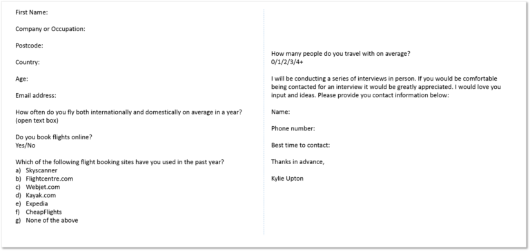While I was recruiting the four participants for my interviews I developed a research plan, which outlined the questions and structure of each interview. As this project was done in a more casual way than others no interview schedule was compiled as it depended entirely on the availability of the participants.
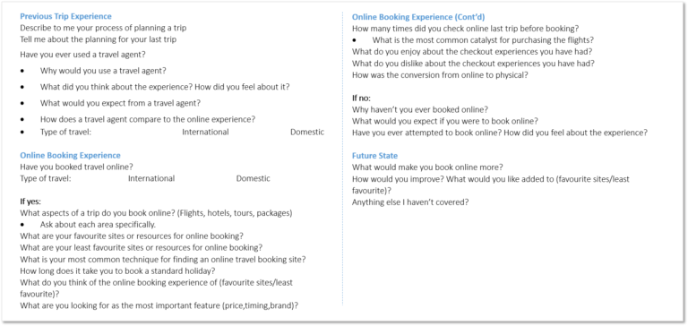On top of the contextual interviews that I conducted for this project I did a competitive analysis of existing flight booking systems. This was important not only for understanding the opportunities available in the market but also for knowing what features are expected by users (present in most popular sites).
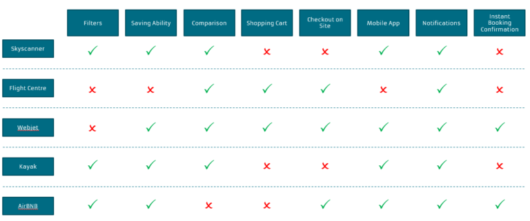With the interviews and the competitive analysis completed I began synthesising this research to come up with the key features for my new flight booking website.
Firstly I built a persona that could be used for future discussion to ensure that all ideas and solutions focused around the user. As UX has developed personas have become less important and people have begun moving towards customer matrices that outline common needs and goals across many REAL users. However, for the sake of this project I wanted to practice creating a persona.
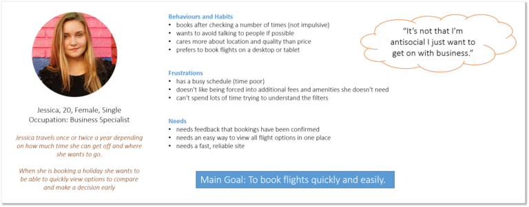In order to synthesis the interviews I found a blank wall and worked through an affinity map.
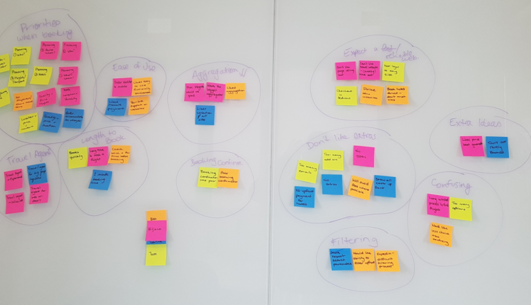From the affinity mapping demonstrated above I was able to pull out four key callouts from users.
With the above synthesis I could establish the key user flow for Jessica.
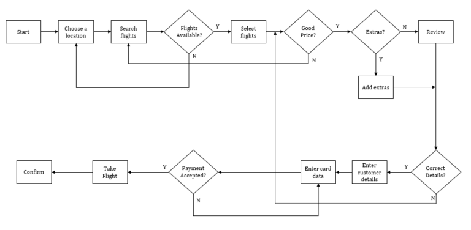In no particular order the below features have come out as important for the intended solution:
It would not be possible (or wise) for a first attempt at the flight booking to include all the features above. Hence with the above user flow, the features that came out of the research, and a prioritisation matrix, I was able to establish MVP.
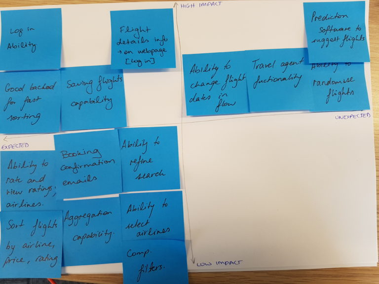The five key features established were:
From the MVP outlined above I decided that the best solution for this project would be to create a site similar to those in existence with a few additional features. The key features being the ability to get boarding passes and check in through the site as well as the option of a travel agent. With this in mind I drew out some sketches of the flow for Jessica to buy a flight.
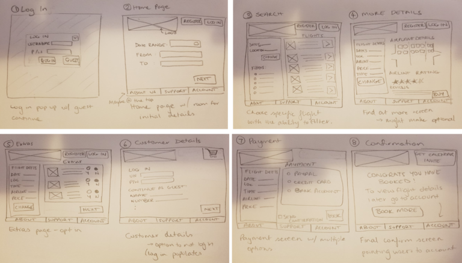From the above sketches I started working on building out some lo-med fidelity wire-frames.
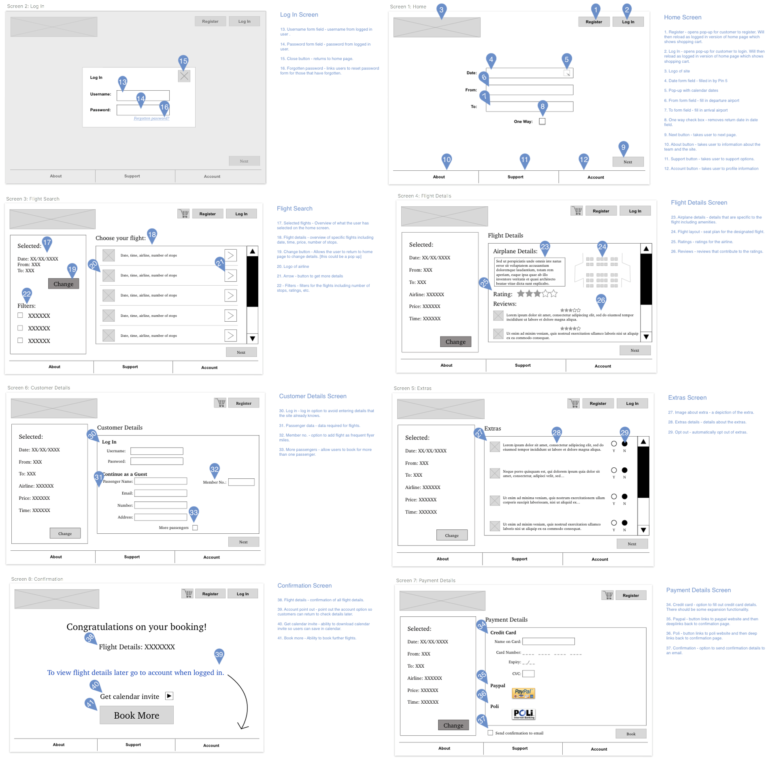And then began to add some graphics.
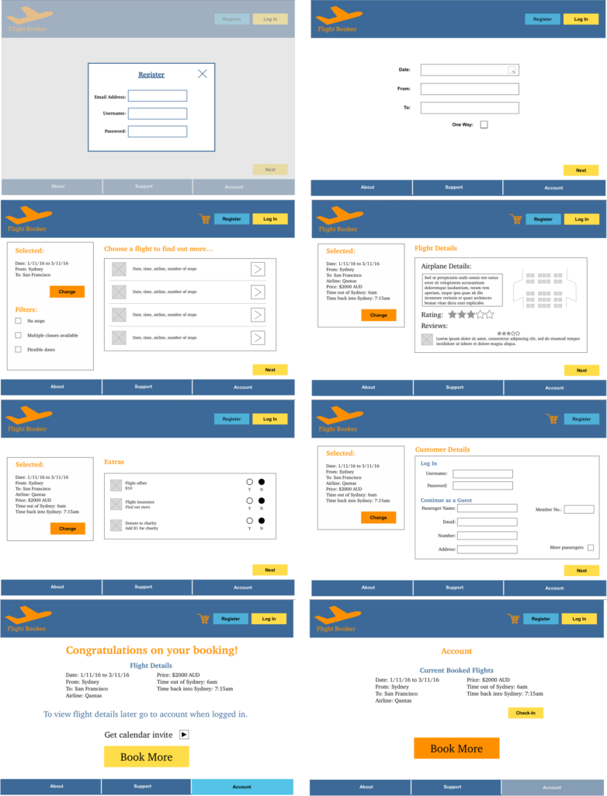Unfortunately, due to the lack of time I was unable to build out all screens for the MVP and ended up building the original flow that was story-boarded. With more time there would be the opportunity to work through more screens.
With the prototype built I then put it in front of a couple of users. This was to ensure that what I thought made sense did and to learn of any potential confusions. To ensure the tests were an efficient use I put together a discussion guide to guide the usability tests. With more time, I would have used a remote testing system and asked more people.
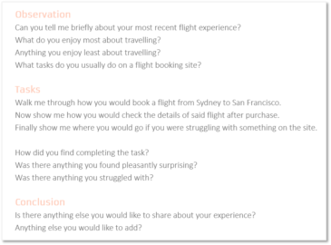From the feedback I had I was able to compile the results into a +/Δ graph to understand the most effective way to improve my prototype.
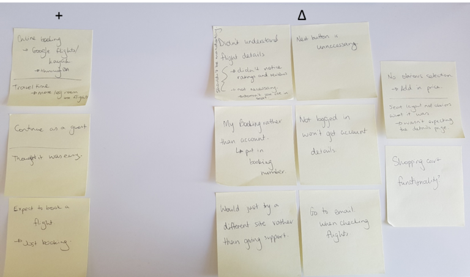After completing the course I put the project on the backburner. Although I believe that there is potential for improvements of the existing environment I don’t believe there is much room in the market for another player. Without time and money this would not succeed and as Kate Bingaman-Burt said you should only start personal projects “because you feel like you are going to either explode, or vomit, or both.”